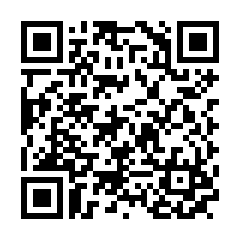
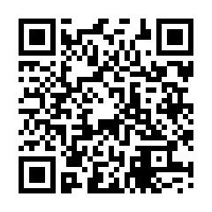

Keyboard Virtual Bahasa Sangihe
Papan ketik web untuk mengetik karakter khusus ortografi bahasa Sangihe
Untuk HP & Tablet

https://tinyurl.com/kb-sangihe-hp
Untuk PC

https://tinyurl.com/kb-sangihe-pc